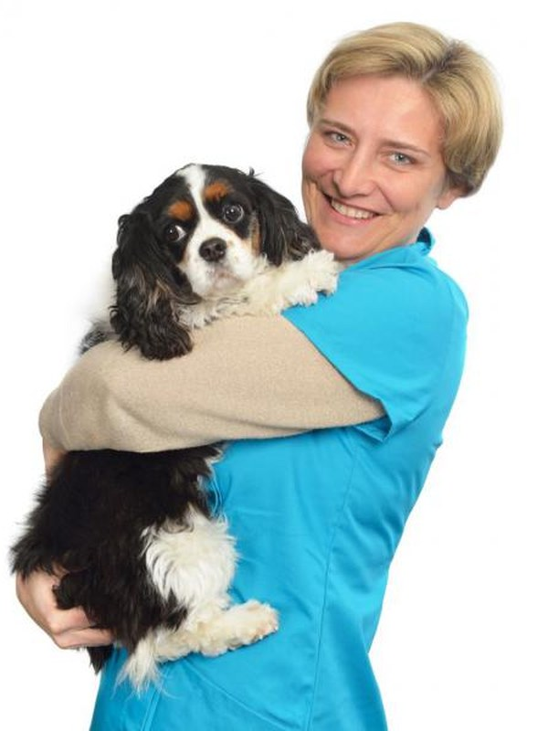

Vakdierenarts
Chantal De Vlieger
Chantal studeerde in 1999 af als dierenarts, optie kleine huisdieren, aan de Universiteit Gent. Na stages en ervaring in andere praktijken bouwde ze binnen de familiepraktijk de afdeling kleine huisdieren verder uit. In 2013 behaalde ze met grote onderscheiding het diploma Vakdierenarts voor kleine huisdieren en won ze de prijs voor beste scriptie over ichthyose bij de Golden Retriever.